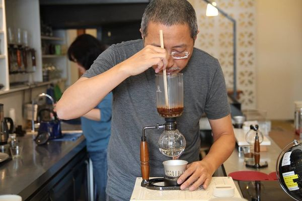
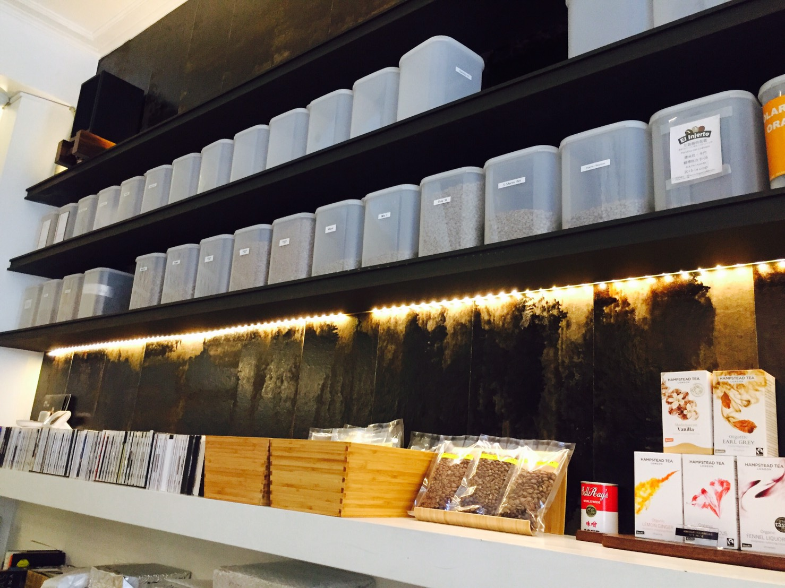

道南館


道南館的小鬍子老闆原本是在政大附近開咖啡店, 擴大經營改來台南開店, 這家店屋齡大約50年囉, 店內整修得很乾淨~ 非常適合來這裡念書XD 後面有黑膠唱片機, 老闆可是收集了很多歷史悠久的唱片呢, 喜歡音樂也可以跟老闆聊聊音樂經喔XD 這家店主要以賽風的方式出杯, 而且是最傳統的酒精燈當作火源, 難度非常高, 但老闆依舊能煮出一杯body濃厚的咖啡, 架上這些被包的紮實的是咖啡生豆，真空包裝可以減緩生豆風味衰退，但是費時耗工，小鬍子老闆能做到這點相當不容易。 通常養豆都需要半年的時間, 然後才會拿出來烘, 為了表現咖啡豆的最佳風味, 店內咖啡豆大多都是淺焙為主, 然後也沒有義式咖啡, 適合跟我一樣喜歡單品的朋友前訪XD